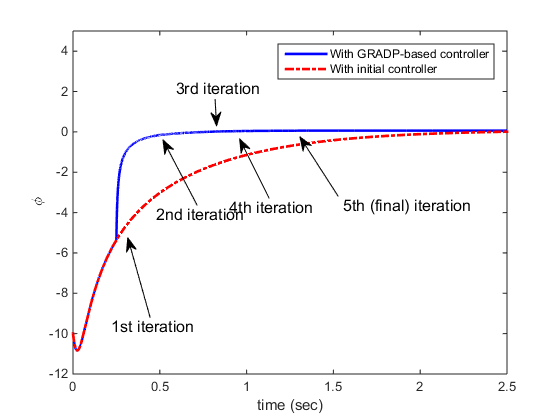
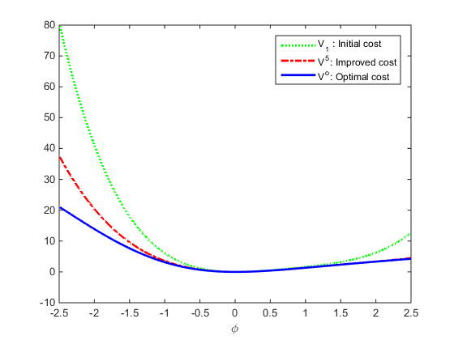

Global Robust Adaptive Dynamic Programming
global W W1 F Q noise_on rho
rho = 0.5 ;
F = [0 -3/2 -1/2];
Q = [5 0 0;0 0 0;0 0 0];
W = [2 -1.4 -.45];
wsave = W;
W1 = W;
P = eye(2)*10;
Pold = -100*eye(2);
noise_on=1;
Psave=[];
Qsave=[];
ua=[];
Trjsave=[];
Tsave=[];
T=0.005;
xinit=-10;
rinit=5;
x=[xinit;zeros(9,1);rinit]';
for i=0:9
C1=[];
C2=[];
C3=[];
CQ=[];
for j=0:49
[t,x] = ode45(@polysys,[j*T,j*T+T]+50*i*T,[x(end,1) zeros(1,9) x(end,11)]');
C1 = [C1; 1/2*(x(end,1)^2-x(1,1)^2) 1/3*(x(end,1)^3-x(1,1)^3) 1/4*(x(end,1)^4-x(1,1)^4)];
C2 = [C2; x(end,2:6)];
C3 = [C3; x(end,7:9)];
CQ = [CQ; x(end,10)];
Tsave=[Tsave;t];
Trjsave=[Trjsave;x(:,[1 11])];
for k=1:length(t)
ua=[ua; W(:)'*x(k,1).^[1 2 3]'+(0.01*sin(10*t(k))+0.01*sin(3*t(k))+0.01*sin(100*t(k)))*noise_on];
end
end
if norm(P(:)-Pold(:))>0.1
cvx_begin sdp
variable Wn(3,1)
variable dQs(3,3) symmetric
Qv=-([C2 -C3]'*[C2 -C3])\[C2 -C3]'*(CQ+C1*Wn(:));
dQs(1,1)==Qv(1);
dQs(1,2)+dQs(2,1)==Qv(2);
dQs(1,3)+dQs(3,1)+dQs(2,2)==Qv(3);
dQs(3,2)+dQs(2,3)==Qv(4);
dQs(3,3)==Qv(5);
dQs>=0;
Pn = [1/2*(Wn(1)) 1/6*(Wn(2)); 1/6*(Wn(2)) 1/4*(Wn(3))];
Pn<=P;
minimize(Pn(1,1)+Pn(2,2))
W=Qv(6:8);
wsave=[wsave;W(:)' ];
cvx_end
noise_on=1;
Psave=[Psave;P(:)'];
Qsave=[Qsave;dQs(:)'];
Pold=P;
P=Pn;
else
noise_on=0;
disp(num2str(i))
end
end
Psave
Qsave;
Calling SDPT3 4.0: 9 variables, 4 equality constraints
For improved efficiency, SDPT3 is solving the dual problem.
------------------------------------------------------------
num. of constraints = 4
dim. of sdp var = 3, num. of sdp blk = 1
dim. of socp var = 3, num. of socp blk = 1
*******************************************************************
SDPT3: Infeasible path-following algorithms
*******************************************************************
version predcorr gam expon scale_data
HKM 1 0.000 1 0
it pstep dstep pinfeas dinfeas gap prim-obj dual-obj cputime
-------------------------------------------------------------------
0|0.000|0.000|8.9e+00|1.7e+00|1.4e+03| 2.495121e+02 0.000000e+00| 0:0:00| chol 1 1
1|1.000|0.467|1.7e-05|9.0e-01|1.0e+03| 4.489762e+02 1.845983e+01| 0:0:00| chol 1 1
2|0.990|1.000|9.2e-06|4.4e-04|1.1e+02| 1.207238e+02 9.398006e+00| 0:0:00| chol 1 1
3|1.000|1.000|1.1e-06|4.6e-05|1.8e+01| 2.991049e+01 1.207361e+01| 0:0:00| chol 1 1
4|0.903|1.000|2.4e-07|4.6e-06|2.1e+00| 1.773022e+01 1.558419e+01| 0:0:00| chol 1 1
5|0.936|1.000|1.6e-08|4.9e-07|4.3e-01| 1.640778e+01 1.598056e+01| 0:0:00| chol 1 1
6|0.987|0.982|3.1e-10|5.5e-08|6.9e-03| 1.622263e+01 1.621574e+01| 0:0:00| chol 1 1
7|0.974|0.974|9.5e-11|5.7e-09|1.8e-04| 1.622009e+01 1.621991e+01| 0:0:00| chol 1 1
8|0.967|0.969|1.0e-10|2.0e-10|5.7e-06| 1.622003e+01 1.622002e+01| 0:0:00| chol 1 1
9|1.000|1.000|1.4e-11|2.1e-11|3.5e-07| 1.622003e+01 1.622003e+01| 0:0:00|
stop: max(relative gap, infeasibilities) < 1.49e-08
-------------------------------------------------------------------
number of iterations = 9
primal objective value = 1.62200259e+01
dual objective value = 1.62200255e+01
gap := trace(XZ) = 3.48e-07
relative gap = 1.04e-08
actual relative gap = 1.04e-08
rel. primal infeas = 1.39e-11
rel. dual infeas = 2.09e-11
norm(X), norm(y), norm(Z) = 8.9e-01, 1.2e+01, 1.7e+01
norm(A), norm(b), norm(C) = 8.8e+00, 2.4e+00, 4.6e+01
Total CPU time (secs) = 0.11
CPU time per iteration = 0.01
termination code = 0
DIMACS: 1.7e-11 0.0e+00 4.0e-11 0.0e+00 1.0e-08 1.0e-08
-------------------------------------------------------------------
------------------------------------------------------------
Status: Solved
Optimal value (cvx_optval): +3.77997
Calling SDPT3 4.0: 9 variables, 4 equality constraints
For improved efficiency, SDPT3 is solving the dual problem.
------------------------------------------------------------
num. of constraints = 4
dim. of sdp var = 3, num. of sdp blk = 1
dim. of socp var = 3, num. of socp blk = 1
*******************************************************************
SDPT3: Infeasible path-following algorithms
*******************************************************************
version predcorr gam expon scale_data
HKM 1 0.000 1 0
it pstep dstep pinfeas dinfeas gap prim-obj dual-obj cputime
-------------------------------------------------------------------
0|0.000|0.000|3.9e+01|2.0e+00|5.4e+02| 7.835363e+01 0.000000e+00| 0:0:00| chol 1 1
1|0.926|0.367|2.9e+00|1.3e+00|1.2e+02| 1.823186e+01 -9.996408e-01| 0:0:00| chol 1 1
2|1.000|0.919|5.9e-06|1.0e-01|2.0e+01| 1.255498e+01 1.332772e-01| 0:0:00| chol 1 1
3|0.908|1.000|6.3e-07|1.3e-04|2.5e+00| 2.682028e+00 2.286478e-01| 0:0:00| chol 1 1
4|0.924|0.547|2.2e-06|6.8e-05|1.5e+00| 2.458079e+00 9.199412e-01| 0:0:00| chol 1 1
5|0.940|1.000|1.3e-07|1.5e-06|1.6e-01| 1.225940e+00 1.067094e+00| 0:0:00| chol 1 1
6|1.000|0.740|8.7e-10|5.2e-07|6.0e-02| 1.190715e+00 1.130671e+00| 0:0:00| chol 1 1
7|0.871|1.000|5.1e-11|1.4e-08|1.5e-02| 1.155918e+00 1.140907e+00| 0:0:00| chol 1 1
8|0.943|0.976|1.9e-11|1.6e-09|6.1e-04| 1.148883e+00 1.148268e+00| 0:0:00| chol 1 1
9|0.977|0.974|1.1e-11|1.8e-10|2.0e-05| 1.148502e+00 1.148482e+00| 0:0:00| chol 1 1
10|0.986|0.986|1.5e-13|4.8e-12|2.8e-07| 1.148490e+00 1.148490e+00| 0:0:00| chol 1 1
11|0.994|1.000|3.3e-14|1.0e-12|6.8e-09| 1.148490e+00 1.148490e+00| 0:0:00|
stop: max(relative gap, infeasibilities) < 1.49e-08
-------------------------------------------------------------------
number of iterations = 11
primal objective value = 1.14849013e+00
dual objective value = 1.14849013e+00
gap := trace(XZ) = 6.77e-09
relative gap = 2.05e-09
actual relative gap = 2.05e-09
rel. primal infeas = 3.30e-14
rel. dual infeas = 1.00e-12
norm(X), norm(y), norm(Z) = 1.9e-01, 9.5e-01, 1.5e+00
norm(A), norm(b), norm(C) = 2.3e+01, 2.4e+00, 1.5e+01
Total CPU time (secs) = 0.12
CPU time per iteration = 0.01
termination code = 0
DIMACS: 4.0e-14 0.0e+00 2.1e-12 0.0e+00 2.1e-09 2.1e-09
-------------------------------------------------------------------
------------------------------------------------------------
Status: Solved
Optimal value (cvx_optval): +2.63148
Calling SDPT3 4.0: 9 variables, 4 equality constraints
For improved efficiency, SDPT3 is solving the dual problem.
------------------------------------------------------------
num. of constraints = 4
dim. of sdp var = 3, num. of sdp blk = 1
dim. of socp var = 3, num. of socp blk = 1
*******************************************************************
SDPT3: Infeasible path-following algorithms
*******************************************************************
version predcorr gam expon scale_data
HKM 1 0.000 1 0
it pstep dstep pinfeas dinfeas gap prim-obj dual-obj cputime
-------------------------------------------------------------------
0|0.000|0.000|2.5e+01|5.0e+00|3.7e+02| 1.407025e+01 0.000000e+00| 0:0:00| chol 1 1
1|0.905|0.430|2.4e+00|2.9e+00|9.6e+01| 4.028360e+00 -1.272483e+00| 0:0:00| chol 1 1
2|1.000|0.792|5.9e-06|6.1e-01|2.8e+01| 6.472381e+00 3.666028e-02| 0:0:00| chol 1 1
3|1.000|0.921|3.5e-07|4.8e-02|3.3e+00| 2.038648e+00 7.801919e-02| 0:0:00| chol 1 1
4|0.648|0.753|6.0e-07|1.2e-02|1.2e+00| 8.887136e-01 9.600802e-02| 0:0:00| chol 1 1
5|0.879|1.000|1.5e-07|5.0e-06|2.4e-01| 3.475210e-01 1.104508e-01| 0:0:00| chol 1 1
6|1.000|0.887|9.0e-08|1.0e-06|6.7e-02| 2.578399e-01 1.907238e-01| 0:0:00| chol 1 1
7|0.887|1.000|1.2e-08|6.7e-08|8.1e-03| 2.156017e-01 2.074802e-01| 0:0:00| chol 1 1
8|0.987|0.880|5.3e-10|1.5e-08|1.5e-03| 2.126603e-01 2.111421e-01| 0:0:00| chol 1 1
9|0.956|0.978|1.4e-10|9.2e-10|5.1e-05| 2.120194e-01 2.119684e-01| 0:0:00| chol 1 1
10|0.957|0.999|6.2e-12|3.0e-11|2.6e-06| 2.119906e-01 2.119880e-01| 0:0:00| chol 1 1
11|1.000|1.000|4.5e-15|1.2e-12|3.2e-07| 2.119889e-01 2.119886e-01| 0:0:00| chol 1 1
12|0.994|1.000|6.5e-15|1.0e-12|5.6e-09| 2.119888e-01 2.119888e-01| 0:0:00|
stop: max(relative gap, infeasibilities) < 1.49e-08
-------------------------------------------------------------------
number of iterations = 12
primal objective value = 2.11988814e-01
dual objective value = 2.11988808e-01
gap := trace(XZ) = 5.58e-09
relative gap = 3.92e-09
actual relative gap = 3.92e-09
rel. primal infeas = 6.51e-15
rel. dual infeas = 1.00e-12
norm(X), norm(y), norm(Z) = 2.4e+00, 1.3e+00, 1.8e+00
norm(A), norm(b), norm(C) = 1.6e+01, 2.4e+00, 4.1e+00
Total CPU time (secs) = 0.16
CPU time per iteration = 0.01
termination code = 0
DIMACS: 7.9e-15 0.0e+00 1.7e-12 0.0e+00 3.9e-09 3.9e-09
-------------------------------------------------------------------
------------------------------------------------------------
Status: Solved
Optimal value (cvx_optval): +2.4195
Calling SDPT3 4.0: 9 variables, 4 equality constraints
For improved efficiency, SDPT3 is solving the dual problem.
------------------------------------------------------------
num. of constraints = 4
dim. of sdp var = 3, num. of sdp blk = 1
dim. of socp var = 3, num. of socp blk = 1
*******************************************************************
SDPT3: Infeasible path-following algorithms
*******************************************************************
version predcorr gam expon scale_data
HKM 1 0.000 1 0
it pstep dstep pinfeas dinfeas gap prim-obj dual-obj cputime
-------------------------------------------------------------------
0|0.000|0.000|2.2e+01|7.2e+00|3.4e+02| 5.086061e+00 0.000000e+00| 0:0:00| chol 1 1
1|0.904|0.451|2.1e+00|4.0e+00|9.1e+01| 1.462822e+00 -1.366901e+00| 0:0:00| chol 1 1
2|1.000|0.767|7.1e-06|9.3e-01|2.9e+01| 3.294471e+00 3.943695e-02| 0:0:00| chol 1 1
3|1.000|0.916|2.8e-07|7.9e-02|2.9e+00| 9.903820e-01 3.218325e-02| 0:0:00| chol 1 1
4|0.417|0.603|7.2e-07|3.1e-02|1.3e+00| 1.385070e-01 1.739752e-02| 0:0:00| chol 1 1
5|1.000|0.948|3.2e-07|1.6e-03|1.3e-01| 7.238683e-02 6.539934e-04| 0:0:00| chol 1 1
6|0.995|1.000|9.4e-09|8.1e-07|1.2e-02| 1.288160e-02 6.341099e-04| 0:0:00| chol 1 1
7|0.813|1.000|2.1e-09|7.6e-08|3.8e-03| 5.071688e-03 1.300178e-03| 0:0:00| chol 1 1
8|1.000|0.814|1.5e-09|2.1e-08|1.4e-03| 4.727300e-03 3.358519e-03| 0:0:00| chol 1 1
9|0.883|1.000|3.4e-10|1.0e-09|2.0e-04| 3.884998e-03 3.688408e-03| 0:0:00| chol 1 1
10|0.961|0.995|1.3e-11|1.5e-10|1.6e-05| 3.784237e-03 3.768045e-03| 0:0:00| chol 1 1
11|0.938|0.984|8.1e-13|4.9e-12|9.6e-07| 3.776134e-03 3.775175e-03| 0:0:00| chol 1 1
12|1.000|1.000|3.6e-15|1.0e-12|1.3e-07| 3.775531e-03 3.775398e-03| 0:0:00| chol 1 1
13|0.995|1.000|6.7e-15|1.0e-12|4.0e-09| 3.775483e-03 3.775479e-03| 0:0:00|
stop: max(relative gap, infeasibilities) < 1.49e-08
-------------------------------------------------------------------
number of iterations = 13
primal objective value = 3.77548258e-03
dual objective value = 3.77547855e-03
gap := trace(XZ) = 4.04e-09
relative gap = 4.01e-09
actual relative gap = 4.01e-09
rel. primal infeas = 6.69e-15
rel. dual infeas = 1.00e-12
norm(X), norm(y), norm(Z) = 2.6e+00, 1.4e+00, 1.9e+00
norm(A), norm(b), norm(C) = 1.5e+01, 2.4e+00, 2.7e+00
Total CPU time (secs) = 0.14
CPU time per iteration = 0.01
termination code = 0
DIMACS: 8.1e-15 0.0e+00 1.5e-12 0.0e+00 4.0e-09 4.0e-09
-------------------------------------------------------------------
------------------------------------------------------------
Status: Solved
Optimal value (cvx_optval): +2.41572
4
5
6
7
8
9
Psave =
10.0000 0 0 10.0000
3.0886 -1.0682 -1.0682 0.6913
2.3593 -0.6309 -0.6309 0.2722
2.2423 -0.5255 -0.5255 0.1772
figure(1)
[t0,y0] = ode45(@polysys0,[0 Tsave(end)],[xinit, rinit]);
for i=1:length(t0)
u0(i) = W1*y0(i,1).^[1 2 3]';
end
plot(Tsave,Trjsave(:,1), 'b-', t0,y0(:,1), 'r-.', 'linewidth', 2)
legend('With GRADP-based controller', 'With initial controller')
xlabel('time (sec)')
ylabel('\phi')
ylim([-12 5])
annotation(figure(1),'textarrow',[0.267857142857143 0.228200808625336],...
[0.245238095238095 0.433832086450543],'String',{'1st iteration'},...
'FontSize',12);
annotation(figure(1),'textarrow',[0.351785714285714 0.291071428571429],...
[0.511904761904762 0.666666666666667],'String',{'2nd iteration'},...
'FontSize',12);
annotation(figure(1),'textarrow',[0.38409703504043 0.386738544474392],...
[0.763163519772001 0.700619878874244],'String',{'3rd iteration'},...
'FontSize',12);
annotation(figure(1),'textarrow',[0.603571428571428 0.535714285714285],...
[0.533333333333334 0.673809523809524],'String',{'5th (final) iteration'},...
'FontSize',12);
annotation(figure(1),'textarrow',[0.480357142857143 0.427966101694915],...
[0.528571428571429 0.669064748201439],'String',{'4th iteration'},...
'FontSize',12);
figure(2)
plot(Tsave,Trjsave(:,2), 'b-', t0,y0(:,2), 'r-.', 'linewidth', 2)
legend('With GRADP-based controller', 'With initial controller')
xlabel('time (sec)')
ylabel('r')
ylim([-1 5])
annotation(figure(2),'textarrow',[0.243684992570579 0.1996691805209],...
[0.676982591876209 0.278255039384132],'String',{'1st iteration'},...
'FontSize',12);
annotation(figure(2),'textarrow',[0.325408618127786 0.287523619950097],...
[0.560928433268859 0.281012459180867],'String',{'2nd iteration'},...
'FontSize',12);
annotation(figure(2),'textarrow',[0.407132243684993 0.373938714289719],...
[0.502901353965184 0.289622365749069],'String',{'3rd iteration'},...
'FontSize',12);
annotation(figure(2),'textarrow',[0.473997028231798 0.450802097059071],...
[0.433268858800774 0.291719058253785],'String',{'4th iteration'},...
'FontSize',12);
annotation(figure(2),'textarrow',[0.592867756315007 0.537890044576523],...
[0.586073500967118 0.286266924564797],'String',{'5th (final) iteration'},...
'FontSize',12);
syms v(y)
x=-2.5:.01:2.5;
vn=[];
v1=[];
vs=[];
us=[];
u1=[];
un=[];
P1=[Psave(2,1) Psave(2,2);Psave(2,3) Psave(2,4)] ;
vsxt=0;
for i=1:length(x)-1
y=x(i);
vn=[vn [y y^2]*P*[y ;y^2]];
v1=[v1 [y y^2]*P1*[y ;y^2]];
vsx = 2.0*y*(0.25*y^4 + 1.5*y^3 + 2.25*y^2 + 5.0)^(1/2) - 3.0*y^2 - 1.0*y^3;
vsxt = vsxt+vsx*(x(i+1)-x(i));
vs=[vs vsxt];
end
figure(3)
plot(x(2:end),v1,'g:',x(2:end),vn,'r-.',x(2:end),vs+21.1238,'b','linewidth',2)
legend('V_1 : Initial cost', 'V^5: Improved cost', 'V^o: Optimal cost')
xlabel('\phi')


